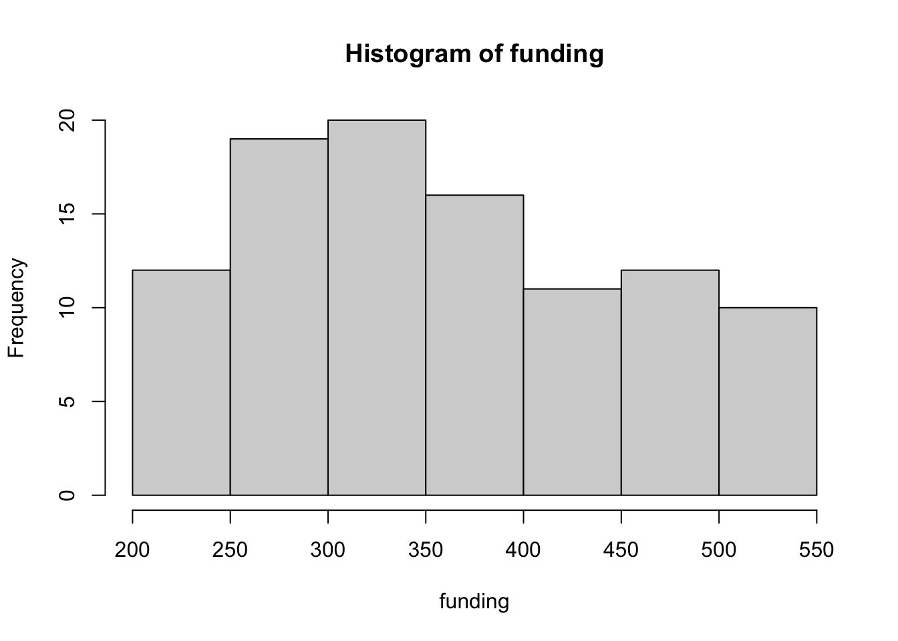
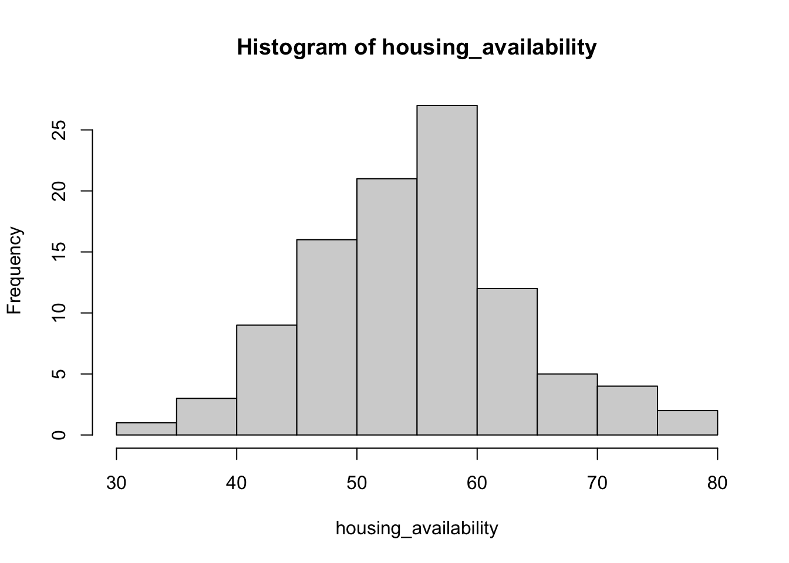
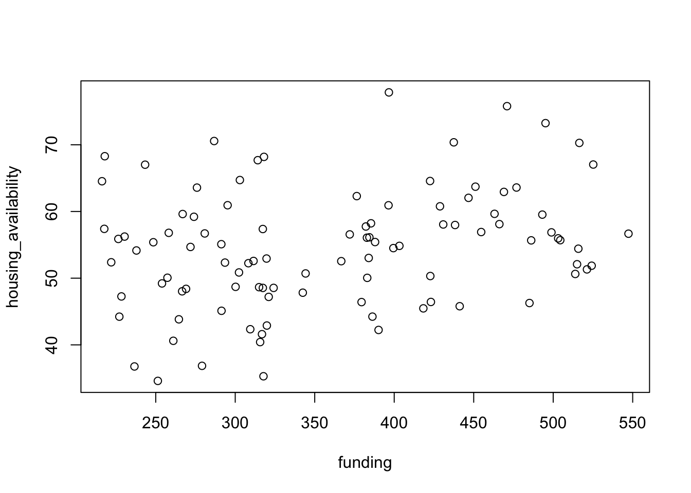
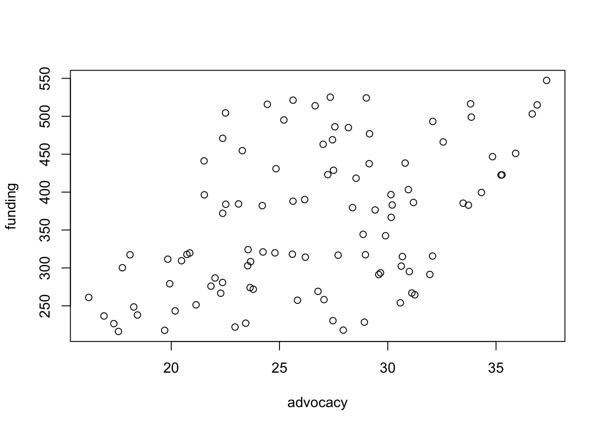
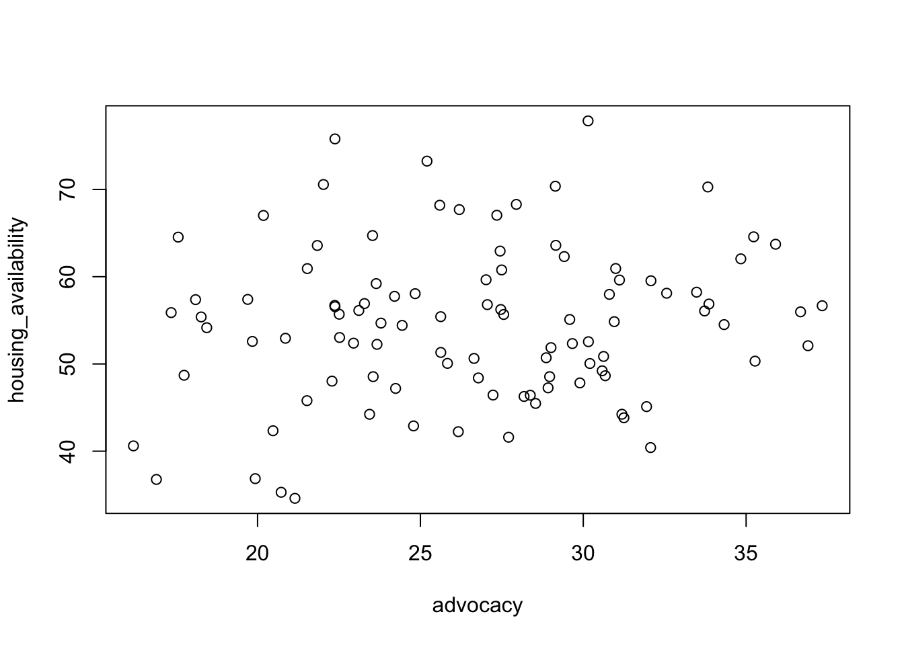
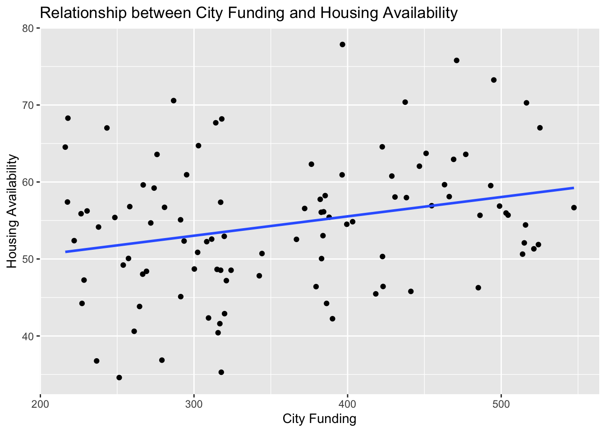

Now that we have many foundational elements identified and practiced - such as generating code to explore data, cleaning data for analysis, and some elements of theory construction - we can begin focusing on some of the important technical components of model building and analysis: interpretation.
Together with aforementioned components, interpretation relies very heavily on both your research question and the subsequent empirical study. While your research question may be based on a host of factors, your empirical study relies on a combination of your analytic frameworks and your analytic methodologies, each of which informs your analytic interpretations.
In particular, this week we examine the role of interpretation and the use of additional techniques and models beyond linear regression. We will also focus a bit more on variations in interpretations found in multiple regression and multivariate regression analysis. We examine some of these connections to differing forms of single, multiple variable, and multivariate analyses across disciplines.
The below research questions highlight the intersection of social justice issues with quantitative analysis. Each question aims to investigate the impact of various social, economic, and policy factors on marginalized populations, helping to identify inequalities and inform evidence-based policy interventions. Keep in mind that these questions can be further refined and tailored to specific contexts or issues of interest within the realm of social justice.
How does income inequality affect access to quality education?
What is the relationship between racial disparities in the criminal justice system?
How does gender discrimination impact career advancement in the workplace?
What are the effects of housing policies on residential segregation and access to affordable housing?
How does healthcare accessibility and affordability vary across different socioeconomic groups?
What is the impact of immigration policies on the economic well-being and social integration of immigrant populations?
How do social welfare policies and programs influence poverty rates and social mobility?
What are the underlying factors contributing to disparities in voting rights and political representation among different demographic groups?
How does discrimination based on sexual orientation or gender identity affect mental health outcomes?
What is the relationship between environmental indicators and the unequal distribution of environmental hazards in historically disadvantaged communities?
Sample analysis
Let us continue with a sample analysis.
We will assume that state data collected for a sample of 100 randomly selected cities requesting funding after the approval of a new bill on affordable housing is provided to a group of researchers. The data set includes three key variables.
The research question, a modified relation to question four above, for the analysis is as follows:
Research question
What is the relationship between state funding for affordable housing initiatives and the availability of new affordable housing units?
Details about each variable are provided below:
city is a marker (which matches the data index) used to indicate a randomly selected city.
funding is the total amount of funding provided to families (in thousands of dollars) in a given 3-week period
housing_availability is the average of city housing units allocated over the same funding period
advocacy is the average number of calls to the state representatives’ hotline four months prior
The advocacy variable was generated as a result of a similar study conducted in a neighboring state, which noticed that there was a potential lag-relationship between advocacy and funding allocations approved at the state-level.
city funding housing_availability advocacy
Min. : 1.00 Min. :216.2 Min. :34.60 Min. :16.19
1st Qu.: 25.75 1st Qu.:280.4 1st Qu.:48.54 1st Qu.:22.52
Median : 50.50 Median :343.4 Median :54.97 Median :27.04
Mean : 50.50 Mean :360.4 Mean :54.54 Mean :26.63
3rd Qu.: 75.25 3rd Qu.:437.7 3rd Qu.:59.55 3rd Qu.:30.30
Max. :100.00 Max. :547.4 Max. :77.86 Max. :37.34
Exploration
We can use some base-R commands to get a quick summary of each variable.
# get plots of variableshist(funding)

hist(housing_availability)

# get summary statistics for variablessummary(funding)
Min. 1st Qu. Median Mean 3rd Qu. Max.
216.2 280.4 343.4 360.4 437.7 547.4
summary(housing_availability)
Min. 1st Qu. Median Mean 3rd Qu. Max.
34.60 48.54 54.97 54.54 59.55 77.86
We can also produce quick plots to examine the relationship between each variable.
Here, we include code to get the correlation coefficient.
::: {.cell}
```{.r .cell-code}
# perform correlation analysis
plot(funding, housing_availability)

cor(funding, housing_availability)
[1] 0.266359
plot(advocacy, funding)

cor(advocacy, funding)
[1] 0.4757307
plot(advocacy, housing_availability)

cor(advocacy, housing_availability)
[1] 0.1444811
:::
Interpretation
First, researchers decided to run a linear regression model on housing_availability and funding.
# perform linear regression analysismodel1 <-lm(housing_availability ~ funding)# summary of the regression modelsummary(model1)
Call:
lm(formula = housing_availability ~ funding)
Residuals:
Min 1Q Median 3Q Max
-18.1793 -5.9060 -0.6551 5.0543 22.4049
Coefficients:
Estimate Std. Error t value Pr(>|t|)
(Intercept) 45.49080 3.41826 13.308 < 2e-16 ***
funding 0.02511 0.00918 2.736 0.00739 **
---
Signif. codes: 0 '***' 0.001 '**' 0.01 '*' 0.05 '.' 0.1 ' ' 1
Residual standard error: 8.579 on 98 degrees of freedom
Multiple R-squared: 0.07095, Adjusted R-squared: 0.06147
F-statistic: 7.484 on 1 and 98 DF, p-value: 0.007391
Plot the data and regression line
ggplot(data, aes(x = funding, y = housing_availability)) +geom_point() +geom_smooth(method ="lm", se =FALSE) +labs(x ="City Funding", y ="Housing Availability", title ="Relationship between City Funding and Housing Availability")

One researcher, however, suggested that a more robust regression analysis should be used with OLS techniques.
Robust regression analysis, as you may recall, helps us reduce outlier effects.
Note: we need to load the MASS package and library to run the following code.
The decisions were made based on the following notes:
Cook’s distance cooks.distance() provides a measure of the influence of a data point when performing regression.
stdres standardized the residuals from our model
cbind() attaches the two measures to our data frame
We can use a cutoff point \(4/n\) where \(n\) is the sample size recommend by others to select the values to display.
We then get the absolute value of the residuals (remember that the sign does not matter in distance), and we print the observations with the highest residuals (here we focus on the top 10 values).
We do this by using the rlm() function in the MASS package.
There are several weights that can be used for the iterated re-weighted least squares technique (IRLS)1.
rrmodel <-rlm(housing_availability ~ funding, data = data)summary(rrmodel)
Call: rlm(formula = housing_availability ~ funding, data = data)
Residuals:
Min 1Q Median 3Q Max
-17.9198 -5.4416 -0.3424 5.2609 22.8048
Coefficients:
Value Std. Error t value
(Intercept) 45.7779 3.5798 12.7880
funding 0.0234 0.0096 2.4328
Residual standard error: 8.213 on 98 degrees of freedom
The default weight is the Huber weight. Huber weights are a type of weight function used to downweight or mitigate the influence of outliers on the estimation procedure. In traditional least squares regression, all data points are given equal weight, and the estimation procedure is sensitive to the presence of outliers. The use of weights in our robust regression model aims to provide more robust estimates by assigning different weights to the observations, giving less influence to outliers.
Huber weights assign larger weights to observations that are close to the regression line and smaller weights to observations that deviate significantly from the line. The weight assigned to each observation depends on its residuals (the difference between the observed values and the predicted values).
Causality
Despite our work on the initial model, the issue of causality needs to be discussed.
There are a few considerations that need to be taken into account:
Confounding variables: There may be other factors that influence the model apart from city funding. For example, economic conditions, housing availability, and social policies can also play significant roles. Failing to account for these confounding variables may lead to erroneous conclusions about the causal relationship.
Reverse causality: The relationships can be bidirectional. Higher housing availability rates may lead to increased city funding directed at addressing the issue. Thus, it’s possible that the relationship is driven by reverse causality, where higher levels of housing availability cause increased funding rather than the other way around.
Omitted variable bias: There may be unobserved or unmeasured factors that affect both city funding and housing availability. Failing to include these variables in the analysis can lead to omitted variable bias, potentially distorting the estimated relationships.
Ecological fallacy: Analyzing aggregated data across the state- and city- levels may not capture the correct level of nuances within the relationship. Aggregating data can lead to an ecological fallacy, where conclusions made at the aggregate level may not hold true at different levels.
Multicollinearity
Multicollinearity refers to a high correlation or linear relationship between two or more predictor variables in a regression model. In the case of three variables, multicollinearity occurs when there is a strong linear relationship between any pair of the three variables, making it difficult to separate their individual effects on the response variable. This can cause instability in the regression model, inflated standard errors, and difficulties in interpreting the coefficients.
Assume we updated our theoretical statement and research question and add the advocacy variable to our model.
# perform linear regression analysismodel2 <-lm(housing_availability ~ funding + advocacy)# summary of the regression modelsummary(model2)
Call:
lm(formula = housing_availability ~ funding + advocacy)
Residuals:
Min 1Q Median 3Q Max
-17.9890 -6.1250 -0.6158 4.9763 22.3024
Coefficients:
Estimate Std. Error t value Pr(>|t|)
(Intercept) 44.80516 4.77827 9.377 2.97e-15 ***
funding 0.02408 0.01049 2.296 0.0238 *
advocacy 0.03969 0.19229 0.206 0.8369
---
Signif. codes: 0 '***' 0.001 '**' 0.01 '*' 0.05 '.' 0.1 ' ' 1
Residual standard error: 8.621 on 97 degrees of freedom
Multiple R-squared: 0.07136, Adjusted R-squared: 0.05221
F-statistic: 3.727 on 2 and 97 DF, p-value: 0.02759
Interaction effects
Next, we add an interaction term to our model.
# get a summary of the advocacy datasummary(advocacy)
Min. 1st Qu. Median Mean 3rd Qu. Max.
16.19 22.52 27.04 26.63 30.30 37.34
# examine the relationship between funding and advocacycor(advocacy, funding)
[1] 0.4757307
# perform linear regression analysismodel3 <-lm(housing_availability ~ funding + advocacy + funding*advocacy)# summary of the regression modelsummary(model3)
Call:
lm(formula = housing_availability ~ funding + advocacy + funding *
advocacy)
Residuals:
Min 1Q Median 3Q Max
-17.9963 -6.2218 -0.5457 4.8889 22.3465
Coefficients:
Estimate Std. Error t value Pr(>|t|)
(Intercept) 49.0944885 17.5511591 2.797 0.00623 **
funding 0.0117777 0.0495659 0.238 0.81268
advocacy -0.1236422 0.6712607 -0.184 0.85425
funding:advocacy 0.0004576 0.0018009 0.254 0.79997
---
Signif. codes: 0 '***' 0.001 '**' 0.01 '*' 0.05 '.' 0.1 ' ' 1
Residual standard error: 8.663 on 96 degrees of freedom
Multiple R-squared: 0.07198, Adjusted R-squared: 0.04298
F-statistic: 2.482 on 3 and 96 DF, p-value: 0.06555
Please note that we may need to run additional tests or more robust models to inform interpretation.
Statistical vs. practical significance
When analyzing the relationship between state funding and housing availability, it is important to consider both statistical significance and practical significance.
Statistical significance refers to the likelihood that the observed relationship or difference between variables is not due to chance. It is determined through statistical tests, such as hypothesis testing or p-values. In this context, statistical significance would indicate whether there is evidence to suggest that state funding has a statistically significant effect on housing availability. A statistically significant result suggests that the relationship between the variables is unlikely to have occurred by random chance.
Practical significance focuses on the magnitude or practical importance of the observed relationship. It asks whether the observed effect size is meaningful or substantial in real-world terms. In the case of state funding and housing availability, practical significance would involve evaluating whether the observed impact of state funding on housing availability is large enough to have a meaningful or substantial effect on the availability of housing units.
Note, however, that while statistical significance provides evidence of a relationship, it does not necessarily imply practical importance. A statistically significant relationship may exist but have a negligible or trivial effect in practice. Conversely, a relationship may have practical significance, even if it does not reach statistical significance due to limited sample size or other factors.
Replication studies
Exploring varied statistical outputs and their significance in a social justice context requires care, both in terms of the underlying theories that relate to the variables themselves and their use across different context. An additional factor that we have discussed relates to the role of the theoretical constructions and their applicability to issues of social injustice.
More often than not, caution should take the lead when developing new models. In these instances, some variation on what is known as a replication study can become a valuable tool. A replication study is a type of study that aims to reproduce or replicate the findings of a previous study. In the context of our course, the replication frameworks can be applied to examine the relationships between variables across contexts and different populations.
There are different types of replication studies.
Direct replication: In this replication study type, researchers attempt to reproduce the original study as closely as possible, meaning they follow the same research design, methodologies, and data analysis procedures.
Partial replication: In this replication study type, researchers attempt to replicate only a portion of the original study. Often, researchers doing a partial replication study focus on a specific aspect, variable, or component of the study.
Conceptual replication: In this replication study type, researchers conduct a replication analysis that focuses on the same research question(s) but through the use of different methods, measures, or population groups.
While replication studies are often used to help ensure the credibility and seeming generalizations found in statistical research findings, they can also serve as a part of a broader process to examine the role of context in statistical models. Importantly, failure to replicate the findings of a study do not mean that the original study findings were incorrect or flawed. Together, these types of explorations can contribute to scientific knowledge and provide evidence to help us understand the role of theory and the practice of social justice.
Beyond regression
Researchers have access to a wide range of advanced statistical techniques and methodologies that provide deeper insights into complex relationships and patterns within data. These approaches go beyond the linear relationships examined in regression analysis and allow researchers to explore non-linear, interactive, and dynamic effects among variables. By utilizing these advanced techniques, researchers can uncover hidden patterns, make more accurate predictions, account for complex interactions, and gain a more comprehensive understanding of the phenomena under investigation.
Some of these methods often provide greater flexibility in handling missing data, dealing with outliers, and accommodating various types of data structures. Overall, the utilization of these advanced statistical techniques expands the availability of tools to consider ways to delve deeper into the complexities of their data and extract meaningful insights.
Part II: Content
This week, we use some standard data included in R to further discuss model interpretation.
While these data sets do not directly connect to the content of our course, they provide some useful examples to return to as they are discussed on many websites that use R and that can be found in online forums.
Each example illustrates different scenarios for interpreting linear models using the summary output. Remember to consider coefficients, standard errors, t-values, and p-values to assess the significance and direction of relationships between predictors and the response variable. Additionally, theory construction and relevant knowledge and context are crucial for a comprehensive interpretation of the results.
This data is from the 1974 Motor Trend US magazine. The data set comprises fuel consumption and 10 aspects of automobile design and performance for 32 automobiles (1973–74 models). You could run similar models using data in the critstats package.
summary(mtcars)
mpg cyl disp hp
Min. :10.40 Min. :4.000 Min. : 71.1 Min. : 52.0
1st Qu.:15.43 1st Qu.:4.000 1st Qu.:120.8 1st Qu.: 96.5
Median :19.20 Median :6.000 Median :196.3 Median :123.0
Mean :20.09 Mean :6.188 Mean :230.7 Mean :146.7
3rd Qu.:22.80 3rd Qu.:8.000 3rd Qu.:326.0 3rd Qu.:180.0
Max. :33.90 Max. :8.000 Max. :472.0 Max. :335.0
drat wt qsec vs
Min. :2.760 Min. :1.513 Min. :14.50 Min. :0.0000
1st Qu.:3.080 1st Qu.:2.581 1st Qu.:16.89 1st Qu.:0.0000
Median :3.695 Median :3.325 Median :17.71 Median :0.0000
Mean :3.597 Mean :3.217 Mean :17.85 Mean :0.4375
3rd Qu.:3.920 3rd Qu.:3.610 3rd Qu.:18.90 3rd Qu.:1.0000
Max. :4.930 Max. :5.424 Max. :22.90 Max. :1.0000
am gear carb
Min. :0.0000 Min. :3.000 Min. :1.000
1st Qu.:0.0000 1st Qu.:3.000 1st Qu.:2.000
Median :0.0000 Median :4.000 Median :2.000
Mean :0.4062 Mean :3.688 Mean :2.812
3rd Qu.:1.0000 3rd Qu.:4.000 3rd Qu.:4.000
Max. :1.0000 Max. :5.000 Max. :8.000
Example 1: Simple Linear Regression
# Fit a simple linear regression modelmodel <-lm(mpg ~ hp, data = mtcars)# Print the model summarysummary(model)
Call:
lm(formula = mpg ~ hp, data = mtcars)
Residuals:
Min 1Q Median 3Q Max
-5.7121 -2.1122 -0.8854 1.5819 8.2360
Coefficients:
Estimate Std. Error t value Pr(>|t|)
(Intercept) 30.09886 1.63392 18.421 < 2e-16 ***
hp -0.06823 0.01012 -6.742 1.79e-07 ***
---
Signif. codes: 0 '***' 0.001 '**' 0.01 '*' 0.05 '.' 0.1 ' ' 1
Residual standard error: 3.863 on 30 degrees of freedom
Multiple R-squared: 0.6024, Adjusted R-squared: 0.5892
F-statistic: 45.46 on 1 and 30 DF, p-value: 1.788e-07
The summary output provides information about the coefficients, standard errors, t-values, and p-values. In this case, the intercept represents the estimated baseline miles per gallon (mpg) when horsepower is zero. The coefficient for horsepower indicates the estimated change in mpg for each unit increase in horsepower.
Example 2: Multiple Linear Regression
# Fit a multiple linear regression modelmodel <-lm(mpg ~ hp + wt, data = mtcars)# Print the model summarysummary(model)
Call:
lm(formula = mpg ~ hp + wt, data = mtcars)
Residuals:
Min 1Q Median 3Q Max
-3.941 -1.600 -0.182 1.050 5.854
Coefficients:
Estimate Std. Error t value Pr(>|t|)
(Intercept) 37.22727 1.59879 23.285 < 2e-16 ***
hp -0.03177 0.00903 -3.519 0.00145 **
wt -3.87783 0.63273 -6.129 1.12e-06 ***
---
Signif. codes: 0 '***' 0.001 '**' 0.01 '*' 0.05 '.' 0.1 ' ' 1
Residual standard error: 2.593 on 29 degrees of freedom
Multiple R-squared: 0.8268, Adjusted R-squared: 0.8148
F-statistic: 69.21 on 2 and 29 DF, p-value: 9.109e-12
The summary output provides interpretation for each coefficient. For example, the coefficient for horsepower represents the estimated change in mpg for each unit increase in horsepower, holding weight constant. Similarly, the coefficient for weight represents the estimated change in mpg for each unit increase in weight, holding horsepower constant.
Example 3: Categorical Predictor
# Fit a linear regression model with a categorical predictormodel <-lm(mpg ~factor(cyl), data = mtcars)# Print the model summarysummary(model)
Call:
lm(formula = mpg ~ factor(cyl), data = mtcars)
Residuals:
Min 1Q Median 3Q Max
-5.2636 -1.8357 0.0286 1.3893 7.2364
Coefficients:
Estimate Std. Error t value Pr(>|t|)
(Intercept) 26.6636 0.9718 27.437 < 2e-16 ***
factor(cyl)6 -6.9208 1.5583 -4.441 0.000119 ***
factor(cyl)8 -11.5636 1.2986 -8.905 8.57e-10 ***
---
Signif. codes: 0 '***' 0.001 '**' 0.01 '*' 0.05 '.' 0.1 ' ' 1
Residual standard error: 3.223 on 29 degrees of freedom
Multiple R-squared: 0.7325, Adjusted R-squared: 0.714
F-statistic: 39.7 on 2 and 29 DF, p-value: 4.979e-09
When a categorical predictor, such as “cyl” (number of cylinders), is included in the model, R automatically treats it as a set of dummy variables. The summary output provides the coefficients for each category level (e.g., 4 cylinders, 6 cylinders, 8 cylinders). These coefficients represent the estimated difference in the response variable (mpg) compared to the reference category (usually the intercept).
Example 4: Interaction Effect
# Fit a linear regression model with an interaction termmodel <-lm(mpg ~ hp * wt, data = mtcars)# Print the model summarysummary(model)
Call:
lm(formula = mpg ~ hp * wt, data = mtcars)
Residuals:
Min 1Q Median 3Q Max
-3.0632 -1.6491 -0.7362 1.4211 4.5513
Coefficients:
Estimate Std. Error t value Pr(>|t|)
(Intercept) 49.80842 3.60516 13.816 5.01e-14 ***
hp -0.12010 0.02470 -4.863 4.04e-05 ***
wt -8.21662 1.26971 -6.471 5.20e-07 ***
hp:wt 0.02785 0.00742 3.753 0.000811 ***
---
Signif. codes: 0 '***' 0.001 '**' 0.01 '*' 0.05 '.' 0.1 ' ' 1
Residual standard error: 2.153 on 28 degrees of freedom
Multiple R-squared: 0.8848, Adjusted R-squared: 0.8724
F-statistic: 71.66 on 3 and 28 DF, p-value: 2.981e-13
When an interaction term (e.g., horsepower * weight) is included in the model, the summary output provides coefficients for both main effects (horsepower and weight) as well as the interaction term. The interaction coefficient represents the change in the relationship between mpg and horsepower as weight increases.